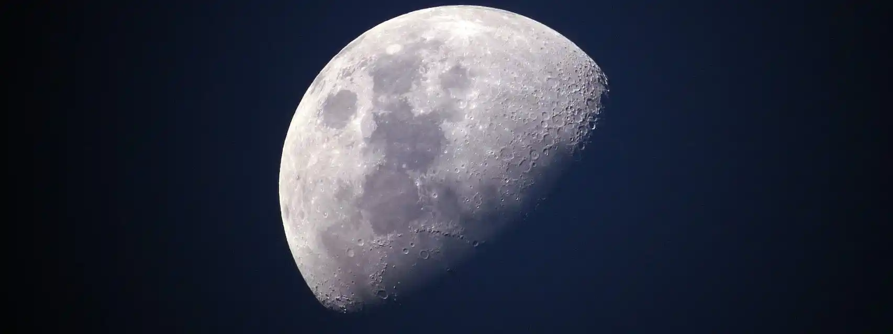
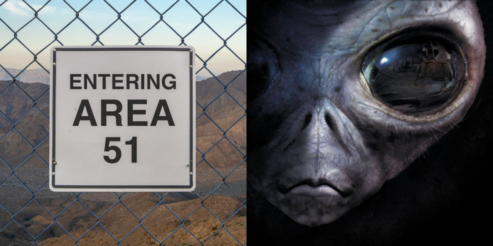

LAS DIEZ TEORÍAS CONSPIRATIVAS MÁS LOCAS DE LA ACTUALIDAD
Menu
Si bien es cierto que las teorías conspirativas siempre han existido, pareciera que en los últimos años se han multiplicado, especialmente tras la pandemia. La incertidumbre, acompañada del caos y la desinformación, es un extraordinario caldo de cultivo para hacerlas pulular. Lo más curioso del fenómeno es que adopta distintas identidades dependiendo de la nación donde surja: en Estados Unidos se dice que John F. Kennedy fue asesinado por el propio Gobierno, mientras que en Alemania se ha hablado sobre la posibilidad de que Hitler huyera a Latinoamérica o que, en España, el cadáver de Franco había sido exhumado hace años del Valle de los Caídos. También hay quienes creen que Elvis sigue vivo o que Paul McCartney murió y fue suplantado por un doble (igual que Avril Lavigne). Pero todavía hay más: a continuación, algunas de las teorías conspirativas más surrealistas que existen actualmente.
Javier Santaolalla nos explica porque es peligroso los comunicadores de fakes news
La Luna es falsa
Una de las más extendidas a lo largo de los años es que Neil Amstrong, en realidad, no pisó la Luna en 1969, sino que todo fue una pantomima de la NASA. Un secreto que la CIA se ha encargado de proteger durante medio siglo. Pero el asunto va más lejos: hay quienes creen que, directamente, la Luna no existe, sino que se trata de una proyección.

Rociamiento químico desde las nubes
¿Ha visto alguna vez cómo el conducto de escape de los aviones deja una estela blanca en los cielos azules? Hay quienes creen que ese rastro causado por la condensación y los gases en la atmósfera es la prueba de que se nos está rociando con sustancias químicas para el control de la natalidad, provocar enfermedades y modificar el clima. Algunos afirman que el Gobierno nos esteriliza y otros consideran que las «estelas químicas» (chemtrails) son geoingeniería para que los agricultores tengan que comprarle semillas a Monsanto.
La Tierra es plana (o hueca)

En los últimos años, el terraplanismo se ha propagado por todo el mundo, incluso celebrando reuniones multitudinarias en Estados Unidos. Pero España no se queda atrás: en el último semestre, por ejemplo, se han desarrollado eventos terraplanistas en salas de cine de Barcelona y Menorca. Los terraplanistas afirman que «se han quitado la venda» ante supuestos siglos de engaño y aseguran que nuestro planeta es plano y estacionario –en vez de esférico y orbital, como evidencia la ciencia–. Por otro lado, hay quienes piensan que la Tierra es hueca y que, incluso, podría haber toda una civilización de seres avanzados que vive dentro.
‘Microchips’ en las vacunas

Desde el comienzo de las investigaciones, los negacionistas de la pandemia y los antivacunas cargaron en contra de las inyecciones de la covid. El cantante Miguel Bosé, por ejemplo, afirmó en múltiples ocasiones que se trataba de experimentos genéticos. Pero muchos conspiranoicos sostienen que las vacunas sirven para inocularnos microchips de rastreo y que las antenas de 5G –una tecnología de comunicación inalámbrica de quinta generación con mayor velocidad de transferencia– pueden leer el supuesto código de barras y monitorear a la población.
5G para controlar nuestra mente

Siguiendo en esa misma línea, hay personas que sostienen que el 5G es una herramienta para el control mental. Otros dicen que sus torres de servicio desataron la pandemia o que producen cáncer. La difusión de este tipo de teorías ha llevado a que algunas personas destruyan las torres, convencidas de que son nocivas.
El pornomarxismo

Según ha explicado la politóloga Laura Méndez, el pornomarxismo es una expresión utilizada en el ensayo El libro negro de la izquierda, que afirma que hay una revolución que está impulsando «el homosexualismo ideológico y la pedofilia». Esta teoría conspiranoica de ultraderecha asegura que las minorías que han sido discriminadas histórica y sistemáticamente ahora son la clase dominante.
El gran reemplazo

Asimismo, entre la extrema derecha ha calado esta teoría conspirativa racista. Originaria de Francia, asegura que la izquierda, las élites liberales y las oenegés tienen un complot para sustituir a la población blanca de origen europeo y cristiano por pueblos no europeos y musulmanes, especialmente africanos y árabes, a través de la inmigración masiva.
El 11-S fue planeado desde dentro
Existen múltiples teorías de la conspiración sobre el ataque a las Torres Gemelas de Nueva York. Entre las más difundidas está que el Gobierno estadounidense organizó los ataques o que sabía de ellos de antemano y permitió que sucedieran. Esto, supuestamente, para restringir las libertades civiles y facilitar que se estableciese un Gobierno mundial autoritario.
Walt Disney, Frozen y el algoritmo
Walt Disney está congelado y la compañía lanzó la película Frozen para hackear el algoritmo, dicen los conspiranoicos. Esta leyenda urbana afirma que el empresario se congeló criogénicamente mientras esperaba una cura contra el cáncer de pulmón y que sería descongelado una vez fuera hallada. Quienes creen en ello aseguran que la empresa creó los dibujos animados de Frozen para que cuando la gente buscara en Google en inglés «Disney congelado» saliera esta película. El año pasado, Tim Burton confesó que, durante un tiempo, buscó el cuerpo congelado en los estudios.
El Área 51 y los extraterrestres
Algunas personas sostienen que el Área 51, una instalación de la Fuerza Aérea de Estados Unidos, es un centro de experimentación con vida extraterrestre. Todo comenzó en los años ochenta, cuando un exempleado aseguró a los medios que había vistos fotos de autopsias a alienígenas y que el Gobierno usaba la base militar para examinar naves extraterrestres.